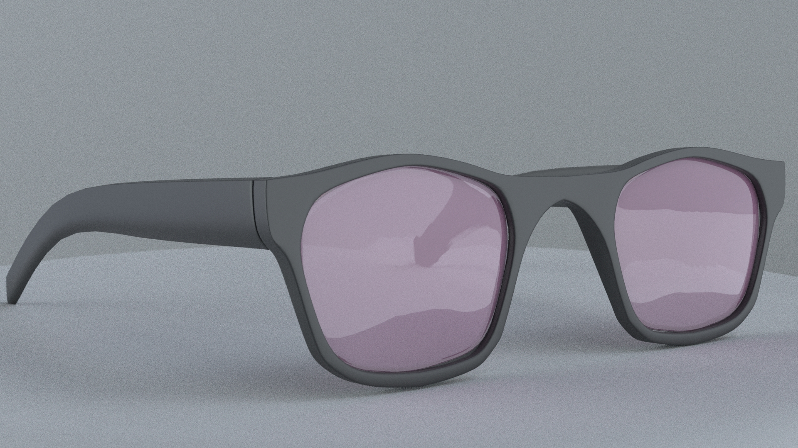
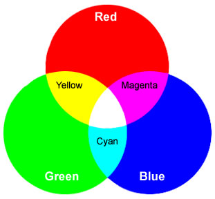

Who Are We?
Pup-il is a group of designers that espire to show the world what man's best friend's see through their eyes. We love our pets and animals and with this project hope to inspire and help users sympathize with how our companions expereince life.
What Do We Do?
At Pup-il, we are researching and designing fashionable glasses to wear while also trying to show our users what dogs see from their point of view.
How Do We Do It?
We are simply applying what we know about addtive colors in terms of light to the filters we will be applying to the lenses of the glasses to create the effect of color blindness.